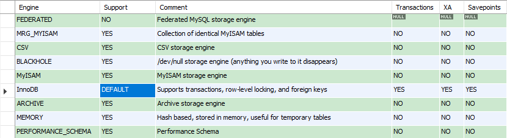
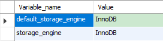

MySQL常用存储引擎
概述
存储引擎指的是如何实现数据存储，如何为存储的数据建立索引以及如何更新，查询数据等技术实现的方法。MySQL中的数据用各种不同的技术存储在文件（或内存）中，这些技术中的每一种技术都使用不同的存储机制、索引技巧、锁定级别，并最终提供各种不同功能。在MySQL中将这些不同的技术及相关功能称为存储引擎。
MySQL中查看存储引擎
查看MySQL支持的存储引擎及默认的存储引擎
show engines;
show variables like '%storage_engine';
查看某个表所使用的存储引擎
show create table tableName;show table status from databaseName where name="tableName";
MySQL常用存储引擎
MySQL中常用的存储引擎包括InnoDB、MyISAM、MEMORY、ARCHIVE、CSV、BLACKHOLE等。
InnoDB存储引擎
- 支持事务及事务相关功能
- 支持外键（foreign key）,外键所在的表称为子表, 而所依赖的表称为父表
- 支持自增长列（auto_increment）,自增长列的值不能为空
- 支持mvcc的行级锁
MyISAM存储引擎
- MyISAM存储引擎不支持事务，不支持行级锁，只支持并发插入的表锁，主要用于高负载的select
- MyISAM类型的表支持三种不同的存储结构：静态型、动态型、压缩型
- 静态型：就是定义的表列的大小是固定（即不含有：xblob、xtext、varchar等长度可变的数据类型），这样mysql就会自动使用静态MyISAM格式。
使用静态格式的表的性能比较高，因为在维护和访问的时候以预定格式存储数据时需要的开销很低。但是这种高性能是由空间换来的，因为在定义时是固定的，所以不管列中的值有多大，都会以最大值为准。 - 动态型：如果列（即使只有一列）定义为动态的（xblob, xtext, varchar等数据类型），这时MyISAM就自动使用动态型，虽然动态型的表占用了比静态型表较少的空间，但带来了性能的降低，因为如果某个字段的内容发生改变则其位置很可能需要移动，这样就会导致碎片的产生。随着数据变化的增多，碎片就会增加，数据访问性能就会相应地降低。
对于因为碎片的原因而降低数据访问性，有两种解决办法：- 尽可能使用静态数据类型
- 经常使用optimize table语句，他会整理表的碎片，恢复由于表的更新和删除导致的空间丢失
(如果存储引擎不支持optimize table，则可以转储并重新加载数据，这样也可以减少碎片)
- 压缩型：如果在这个数据库中创建的是在整个生命周期内只读的表，则这种情况就是用MyISAM的压缩型表来减少空间的占用
MEMORY存储引擎
- MEMORY存储引擎使用存储在内存中的数据来创建表，而且所有的数据也都存储在内存中
- 每个基于MEMORY存储引擎的表实际对应一个磁盘文件，该磁盘文件的文件名和表名是相同的，类型为.frm。该文件只存储表的结构，而其数据文件，都是存储在内存中，这样有利于对数据的快速处理，提高整个表的处理能力
- MEMORY存储引擎默认使用哈希（HASH）索引，其速度比使用B-+Tree型要快，如果希望使用B树型，则在创建的时候可以指定
- MEMORY存储引擎文件数据都存储在内存中，如果mysqld进程发生异常，重启或关闭机器这些数据都会消失。所以MEMORY存储引擎中的表的生命周期很短，一般只使用一次
BLACKHOLE存储引擎
BLACKHOLE存储引擎支持事务，且支持mvcc的行级锁，主要用于日志记录或同步归档，这个存储引擎除非有特别目的，否则不适合使用
存储引擎间相互转化
修改表的存储引擎
alter table tableName engine=Innodb/MyISAM/Memory;
优点：简单且适合所有的引擎
缺点：- 这种转化方式需要大量的时间和I/O，MySQL要执行从旧表到新表的一行一行地复制所以效率比较低
- 在转化期间源表加了读锁
- 从一种引擎到另一种引擎做表转化，所有属于原始引擎的专用特性都会丢失，比如从InnoDB到MyISAM则InnoDB的索引会丢失
使用dump（转储）import（导入）
优点：使用mysqldump这个工具将修改的数据导出后会以.sql的文件保存，可以对这个文件进行操作，所以有更多更好的控制，如修改表名、修改存储引擎等第1种方式简便，第2种方式安全，这第3种方式则算是前两种方式的折中:
create table newtable like oldtable;alter table newtable engine=innodb/myisam/memory;insert into newtable select * from oldtable;
如果数据量不大的话这种方式还是可行的。还有更高效的办法就是增量填充，在填充完每个增量数据块之后提交一次事务，这样就不会导致撤销日志文件过大：
start transaction;insert into newtable select * from oldtable where id(主键) between x and y;commit;
这样等数据填充之后有了需要的新表，旧表也存在，不需要的话可以将旧表删除，很方便。